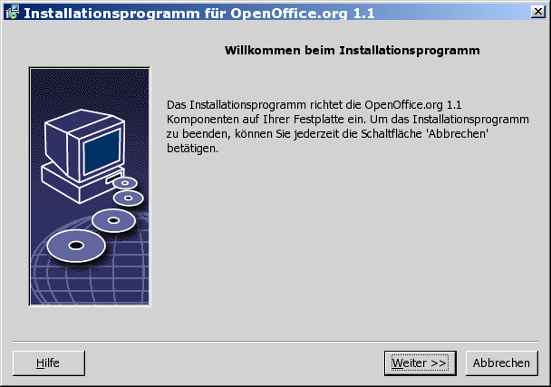
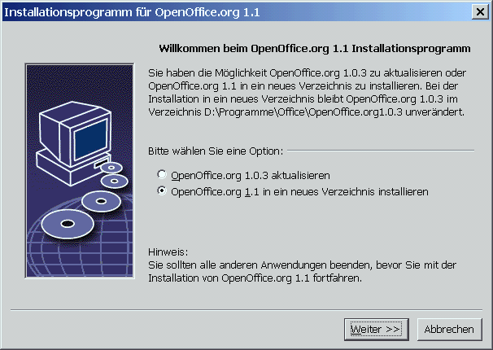
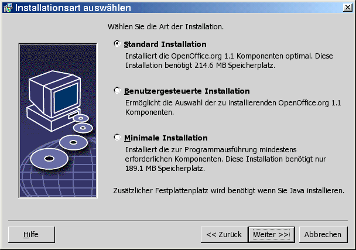
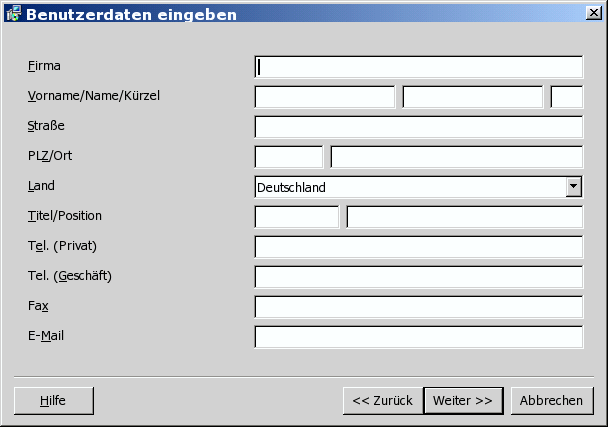

| << zurück | Inhalt | weiter >> |
4 Mehrbenutzer- und Netzwerkinstallation
Die Installation von
Serverinstallation - wird vom Systemadministrator mit dem Befehl setup -net installiert. Die
OpenOffice.org -Dateien werden in ein Verzeichnis mit Lese- und Ausführungszugriff für alle Benutzer kopiert (siehe Seite 29)Benutzerinstallation - Jeder Benutzer installiert eine Kopie von
OpenOffice.org in seinem Homeverzeichnis oder installiert nur die benutzerspezifischen Dateien. Letzteres wird auch als Workstation-Installation bezeichnet und erfordert Zugriff auf die Serverinstallation, um dieOpenOffice.org -Anwendungen auszuführen (siehe Seite 39).
Server-Installation
Die
Serverinstallation ist keine
eigenständige Version von
Installationsvoraussetzungen
Die
Serverinstallation von
Installation starten
Installation auf UNIX-Plattformen
Melden Sie sich als Systemadministrator an.
Starten Sie die grafische Benutzeroberfläche XWindow.
Öffnen Sie eine Terminalemulation und wchseln Sie in das Verzeichnis, in welches Sie zuvor die Installationsdateien entpackt haben.
Starten Sie das Installations-Script mit folgendem Befehl (beachten Sie das Leerzeichen vor dem „-“):
./setup -net
Installation auf Windows-Plattformen
Melden Sie sich als Systemverwalter am System an.
Öffnen Sie das Windows-Menü Start, wählen Sie Ausführen und geben Sie in das Feld Öffnen X:\{Downloadverzeichnis}\setup.exe -net ein (Beachten Sie das Leerzeichen vor dem „-“).
X steht für den Buchstaben des Laufwerks und {Downloadverzeichnis} für das Verzeichnis, in welches sie die Installationsdateien entpackt haben.
Klicken Sie auf OK zum Starten der Installation.
|
|
Wenn Sie eine bestehende OpenOffice.org-Installation aktualisieren, müssen Sie dem Installationsprogramm angeben, wo sich diese frühere Version befindet. Wenn die Installation eine frühere aktualisierbare Version nicht automatisch erkennt, versuchen Sie, das Installationsprogramm mit dem Parameter -update auszuführen: ./<Installation> -net -update:<Pfad_zu_früherer_Serverinstallation> wobei <Installation> der Name der zu startenden Installationsroutine ist (siehe oben) und <Pfad_zu_früherer_Serverinstallation> der volle Pfad zur früheren Serverinstallation von OpenOffice.org ist. |
Installationsverlauf
Begrüßung
Das erste Fenster, das nach dem Starten des Installationsprogramms angezeigt wird, ist der Willkommen-Dialog.
-

Klicken Sie auf Weiter.
-

Wenn das Installationsprogramm eine frühere StarOffice-(5.2 oder höher) oder OpenOffice.org-Version auf Ihrem Rechner findet, werden Sie gefragt, ob Sie die Installation aktualisieren oder in einem neuen Verzeichnis installieren möchten.
Wählen Sie eine Installationsoption und klicken Sie auf Weiter.
Wichtige Hinweise
Die Datei Readme wird in einem Fenster angezeigt. Die Readme-Datei befindet sich im Installationsverzeichnis Ihres Rechners, damit Sie sie später öffnen können.
Lesen Sie die Informationen und klicken Sie auf Weiter.
Lizenzvereinbarung
Der nächste
Dialog enthält die Lizenzvereinbarung. Wenn Sie die Vereinbarung
nicht akzeptieren, wird
Lesen Sie die Lizenzvereinbarung durch. Wenn Sie damit einverstanden sind, stellen Sie sicher, dass Sie die Vereinbarung bis ans Ende durchlaufen haben, wählen Sie die Option Ich akzeptiere die Bedingungen der Vereinbarung und klicken Sie auf OK.
Wenn Sie nicht damit einverstanden sind, klicken Sie auf Ablehnen, um das Installationsprogramm zu beenden.
Installationsart
Verwenden Sie diesen Dialog, um die
Installationsart zu wählen, die Sie ausführen möchten.
Dieser Dialog wird nicht angezeigt, wenn Sie eine frühere
Version von
Der angegebene Speicherplatzbedarf ist lediglich ungefähr und hängt von den Eigenschaften der Speichermedien ab.
Drei Installationsarten stehen zur Verfügung:
Standard Installation - empfohlen für die meisten Benutzer. Installiert alle
OpenOffice.org -Anwendungen und eine Auswahl von Filtern.Benutzergesteuerte Installation - empfohlen für fortgeschrittene Benutzer. Sie ermöglicht Ihnen, die zu installierenden Komponenten einzeln auszuwählen.
Minimale Installation - empfohlen für Benutzer mit eingeschränktem Speicherplatz. Diese Option installiert nur die Komponenten, die erforderlich sind, um
OpenOffice.org auszuführen.
-

Wählen Sie Benutzergesteuerte Installation.
Installieren Sie bei der Serverinstallation alle
OpenOffice.org -Komponenten, damit jeder Benutzer auf diese Optionen bei einer Workstation-Installation zugreifen kann.Klicken Sie auf Weiter zum Fortsetzen der Installation.
Komponentenauswahl
Wenn Sie die Option Benutzergesteuerte Installation wählen, können Sie die Module und Komponenten auswählen, die Sie installieren möchten.
Klicken Sie auf das Pluszeichen (+) neben dem Namen eines Moduls oder einer Komponentenkategorie, um die Liste aufzuklappen. Klicken Sie auf die Kategorie oder die Komponente, die Sie installieren möchten. Wenn in einer Kategorie nicht alle Komponenten ausgewählt wurden, ist das Feld vor der Kategorie halbtransparent.
-

Kategorien in dunkelblau werden mit allen ihren Komponenten installiert.
Kategorien in hellblau werden nur mit einigen ihrer Komponenten installiert.
Kategorien in weiß werden nicht installiert.
Zum Wiederherstellen der Standardinstallationsoptionen klicken Sie auf die Schaltfläche Standard.

Wählen Sie die gewünschten Module und Komponenten für die Installation aus.
Klicken Sie auf Weiter zum Fortsetzen der Installation.
Installationsverzeichnis
Im nächsten Dialog können Sie das Installationsverzeichnis wählen. Dieser Dialog wird bei einer Aktualisierungsinstallation nicht angezeigt.
In diesem Dialog werden die in Ihrem System verfügbaren Laufwerke angezeigt. Der angegebene Speicherplatzbedarf ist lediglich ungefähr und hängt von den Eigenschaften der Speichermedien ab.
Geben Sie einen Pfad für das Installationsverzeichnis in das Textfeld ein oder klicken Sie auf Durchsuchen, um ein Verzeichnis auszuwählen.
Wenn das Verzeichnis nicht existiert, werden Sie aufgefordert, es anzulegen.
Klicken Sie Weiter zum Fortsetzen der Installation.
|
|
Stellen Sie sicher, dass das Verzeichnis, das Sie für die Serverinstallation wählen, Lese- und Ausführungsrechte für alle Benutzer hat, damit Sie Workstation-Installationen durchführen können. |
Java™ Runtime Environment-Installation
Der nächste Dialog listet die Versionen der Java™-Laufzeitumgebung (JRE) auf, die in Ihrem System installiert sind. Wählen Sie die JRE, die Sie verwenden möchten. Empfohlen wird Version 1.4 oder höher.

Wenn in Ihrem System bereits eine JRE vorhanden ist, wählen Sie die Version, die Sie verwenden möchten, und klicken dann auf OK.
|
|
Die JRE-Installation ist eine gemeinsame Installation für alle Benutzer. Wenn Sie die JRE nicht zu diesem Zeitpunkt installieren, kann sie später von den Benutzern bei der Workstation-Installation installiert werden. |
Überprüfen der Installationsoptionen
Nach Einstellen der Installationsoptionen wird ein Dialog angezeigt, der Ihnen ermöglicht, Ihre Einstellungen zu überprüfen.
Klicken Sie auf Installieren, um mit der Installation fortzufahren, oder klicken Sie auf Zurück, um die vorgenommenen Einstellungen zu ändern.
Start des Kopiervorgangs
Während der Installation werden der Arbeitsfortschritt in Prozent und die geschätzte Restzeit angezeigt.
Abschluß der Installation
Wenn die Installation fertig ist, wird ein abschließender Dialog angezeigt.
Klicken Sie auf Fertig zum Beenden der Installation.
|
|
Je nach dem verwendeten Window Manager müssen Sie sich möglicherweise abmelden und Ihren Window Manager neu starten. |
Nun kann jeder Benutzer eine Workstation-Installation ausführen, um die erforderlichen Dateien in sein persönliches Verzeichnis oder auf seine lokale Festplatte zu kopieren. Die Workstation-Installation wird im nächsten Kapitel beschrieben.
Wenn Sie
beabsichtigen, eine große Anzahl von Installationen von einer
Serverinstallation aus durchzuführen, möchten Sie
möglicherweise den Registrierungsdialog ausschalten, der beim
zweiten Start von
Workstation-Installation
Bevor Sie
|
|
Wenn Sie eine bestehende Serverinstallation aktualisieren, werden die Benutzer automatisch aufgefordert, die Workstation-Installationen beim nächsten Start zu aktualisieren. |
Installationsvoraussetzungen
Eine Workstation-Installation erfordert mindestens 20 MB freien Speicherplatz.
Installation starten
Bevor Sie
Auf Rechnern, auf
denen bereits eine Version von
.sversionrc (UNIX-Systeme)
sversion.ini (Windows-Systeme).
Bei für mehrere Benutzer konfigurierten Windows NT/2000- und Win9x-Betriebssystemen befindet sich die Datei sversion.ini im Verzeichnis "C:\Dokumente und Einstellungen\{Benutzername}\Anwendungsdaten".
Diese Dateien zeigen
den Pfad und die Version des bereits installierten Programmpakets
OpenOffice.org
an. Wenn die Version identisch
mit der Version ist, die Sie installieren möchten, müssen
Sie
Installation auf UNIX-Plattformen
Melden Sie sich mit Ihrem Benutzernamen an.
Starten Sie die grafische Benutzeroberfläche XWindow.
Wechseln Sie mittels einer Terminalemulation in das Unterverzeichnis program im Installationsverzeichnis der Serverinstallation. Verwenden Sie nicht die Original-Installationsdatei der
OpenOffice.org -Installation.Starten Sie das Installations-Script mit folgendem Befehl:
./setup
Installation auf Windows-Plattformen
Melden Sie sich mit Ihrem Benutzernamen an.
Wechseln Sie ins Unterverzeichnis program im Installationsverzeichnis der Serverinstallation. Verwenden Sie nicht die Original-Installationsdatei der
OpenOffice.org -Installation.Wählen Sie eine der folgenden Vorgehensweisen
Doppelklicken Sie auf das Programm Setup.exe.
Öffnen Sie das Windows-Menü Start, wählen Sie Ausführen und geben Sie in das Feld Öffnen {server install dir}\program\setup.exe ein.
Klicken Sie auf Ok zum Starten der Workstation-Installation.
wobei {server install dir} das Installationsverzeichnis der Serverinstallation ist.
Installationsverlauf
Begrüßung
Das erste Fenster, das nach dem Starten des Installationsprogramms angezeigt wird, ist der Willkommen-Dialog.
Klicken Sie auf Weiter.
Wenn das
Installationsprogramm eine frühere StarOffice-
(5.2 oder höher) oder
Wählen Sie eine Installationsoption und klicken Sie auf Weiter.
Wichtige Hinweise
Die Datei Readme wird in einem Fenster angezeigt. Die Readme-Datei befindet sich im Installationsverzeichnis Ihres Rechners, damit Sie sie später öffnen können.
Lesen Sie die Informationen und klicken Sie auf Weiter.
Lizenzvereinbarung
Der nächste
Dialog enthält die Lizenzvereinbarung. Wenn Sie die Vereinbarung
nicht akzeptieren, wird
Lesen Sie die Lizenzvereinbarung durch. Wenn Sie damit einverstanden sind, stellen Sie sicher, dass Sie die Vereinbarung bis ans Ende durchlaufen haben, wählen Sie die Option Ich akzeptiere die Bedingungen der Vereinbarung und klicken Sie auf OK.
Wenn Sie nicht damit einverstanden sind, klicken Sie auf Ablehnen, um das Installationsprogramm zu beenden.
Migration
Wenn StarOffice 5.2 auf Ihrem Rechner installiert ist, wird ein Migrationsdialog angezeigt, der Ihnen ermöglicht, persönliche Daten in die neue Installation zu importieren. Dieser Dialog wird nicht angezeigt, wenn Sie die Option Aktualisierung der Installation gewählt haben.

Wenn Sie Ihre persönlichen Daten übernehmen möchten, markieren Sie das Markierfeld persönliche Daten importieren.
Klicken Sie auf Weiter, um mit der Installation fortzufahren.
Benutzerdaten
Wenn Sie die persönlichen Daten nicht importieren, wird der Dialog Benutzerdaten eingeben angezeigt.
Die hier eingegebenen
Daten werden von
Sie können auf
diesen Dialog auch später in jeder
-

Geben Sie Ihre persönlichen Daten ein.
Klicken Sie Weiter zum Fortsetzen der Installation.
Installationsart
|
|
Wenn Sie den nachstehend beschriebenen Dialog nicht sehen, sondern einen Dialog, der die Installationsarten Standard, benutzergesteuert und minimal zur Auswahl stellt, schließen Sie den Dialog und führen dann das Installationsprogramm im Unterverzeichnis program der Serverinstallation aus. |
Die Option
Workstation-Installation
installiert lokal nur
benutzerspezifische Dateien und erfordert den Zugriff auf die
Serverinstallation, um
Die Option Lokale
Installation installiert lokal
eine vollständige Kopie von
Wählen Sie die Installationsart Workstation-Installation. Sie müssen für jeden Benutzer desselben Rechners eine eigene Workstation-Installation ausführen.
Klicken Sie auf Weiter zum Fortsetzen der Installation.
Installationsverzeichnis
Im nächsten Dialog können Sie das Installationsverzeichnis wählen. Dieser Dialog wird bei einer Aktualisierungsinstallation nicht angezeigt.
In diesem Dialog werden die in Ihrem System verfügbaren Laufwerke angezeigt. Der angegebene Speicherplatzbedarf ist lediglich ungefähr und hängt von den Eigenschaften der Speichermedien ab.
Geben Sie einen Pfad für das Installationsverzeichnis in das Textfeld ein oder klicken Sie auf Durchsuchen, um ein Verzeichnis auszuwählen.
Wenn das Verzeichnis nicht existiert, werden Sie aufgefordert, es anzulegen.
Klicken Sie Weiter zum Fortsetzen der Installation.
Überprüfen der Installationsoptionen
Nach Einstellen der Installationsoptionen wird ein Dialog angezeigt, der Ihnen ermöglicht, Ihre Einstellungen zu überprüfen.
Klicken Sie auf Installieren, um mit der Installation fortzufahren, oder klicken Sie auf Zurück, um die vorgenommenen Einstellungen zu ändern.
Zuordnung der Dateitypen
Verwenden Sie diesen
Dialog, um

Wählen Sie die Dateitypen, die
OpenOffice.org öffnen soll.Damit
OpenOffice.org Writer der Standardeditor für HTML-Dateien wird, markieren Sie das Markierfeld Standard HTML Editor.Klicken Sie auf OK
|
|
Sie können die Dateitypzuordnungen einer bestehenden Installation verändern, indem Sie das Installationsprogramm ausführen und die Option Modifizieren wählen (siehe Modifizieren auf Seite 62). |
Java™ Laufzeitumgebung
Wenn die Java™-Laufzeitumgebung (JRE) bei der Serverinstallation nicht angegeben wurde, werden Sie aufgefordert, eine JRE zu wählen.
Start des Kopiervorgangs
Während der Installation werden der Arbeitsfortschritt in Prozent und die geschätzte Restzeit angezeigt.
Abschluß der Installation
Wenn die Installation fertig ist, wird ein abschließender Dialog angezeigt.
Klicken Sie auf Fertig zum Beenden der Installation.
|
|
Je nach dem verwendeten Window Manager müssen Sie sich möglicherweise abmelden und Ihren Window Manager neu starten. |
OpenOffice.org starten
|
|
Wechseln Sie in das Verzeichnis {installpath}/program oder das lokale OpenOffice.org-Verzeichnis in Ihrem Homeverzeichnis und geben Sie Folgendes ein: ./soffice Sie können auch das Verzeichnis {installpath}/program zum Programmpfad hinzufügen und dann in irgendeinem Verzeichnis "soffice" eingeben, um OpenOffice.org zu starten. Zum Einrichten des Standarddruckers für OpenOffice.org rufen Sie das Druckerverwaltungsprogramm spadmin auf, das im Anhang beschrieben wird. Nach Abschluss des Installationsvorgangs unter Solaris OE melden Sie sich ab und dann wieder an, um die CDE-Integration zu aktualisieren. |
|
|
Die Symbole zum
Starten der OpenOffice.org-Anwendungen
werden zum Windows-Menü Start
im Ordner Programme/OpenOffice.org
Während des
Installationsvorgangs wird eine Verknüpfung zum Näheres zum Schnellstarter finden Sie in der Online-Hilfe. |
Informationen zum
Starten von
| << zurück | Seitenanfang | weiter >> |
| (Einzelbenutzer-Installation) | (Anhang) |